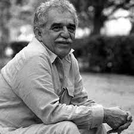

Школа иностранных языков онлайн
Личный кабинет
Школа иностранных языков онлайн
Выберите язык
Наши преподаватели
Хорхе Луис Борхес

Его полное имя — Хорхе Франсиско Исидоро Луис Борхес Асеведо (исп. Jorge Francisco Isidoro Luis Borges Acevedo), однако, по аргентинской традиции, он никогда им не пользовался. По словам Борхеса, в нём текла баскская, андалузская, английская, португальская, норманнская, и, скорее всего, еврейская кровь. В доме разговаривали по-испански и по-английски. С раннего возраста Хорхе увлекался поэзией, в возрасте четырёх лет научился читать и писать. В 1905 году Борхес начал изучать английский с домашней учительницей. В следующем году он написал свой первый рассказ по-испански «La visera fatal».
Леонор Асеведо Суарес, мать писателя, не разлучавшаяся с сыном до самой своей смерти в 99-летнем возрасте (1975)
Обучение в школе Борхес начал в 9 лет сразу с четвёртого класса. Это был неприятный опыт для мальчика, так как одноклассники насмехались над ним, а учителя не могли научить его ничему новому.

Габриэль Гарсиа Маркес
Родился в колумбийском городке Аракатака (департамент Магдалена) в семье Габриэля Элихио Гарсиа (исп. Gabriel Eligio García) и Луизы Сантьяга Маркес Игуаран (исп. Luisa Santiaga Márquez Iguarán). Вскоре после рождения Габриэля его отец стал фармацевтом. В январе 1929 года его родители переехали в город Сукре, но мальчик остался в Аракатаке, где его воспитывали бабушка и дед по материнской линии — Транкилина Игуаран Котес (исп. Tranquilina Iguarán Cotes) и полковник Николас Рикардо Маркес Мехиа (исп. Nicolás Ricardo Márquez Mejía). Именно дед и бабушка, каждый из которых был превосходным рассказчиком, познакомили будущего писателя с народными преданиями и языковыми особенностями, ставшими впоследствии важным элементом его творчества. Когда Гарсиа Маркесу было девять лет, его дед умер, и Габриэль переехал к родителям в Сукре, где его отец владел аптекой.
Жорже Амаду
Жоржи Амаду, сын Жуана Амаду ди Фария и Эулалии Леал, родился 10 августа 1912 года на фазенде Ауриси́диа в штате Баия, однако относительно точного места рождения у биографов писателя нет единого мнения. Отец Жоржи был эмигрантом из штата Сержипи, приехавшим в Баию выращивать какао. Но через год из-за эпидемии оспы его семья вынуждена была переехать в город Ильеус, где Жоржи провёл всё своё детство. Кроме Жоржи в семье полковника Жуана Амаду было ещё три младших сына: Жофри (Jofre, родился в 1915 году), Жоэлсон (Joelson, родился в 1920 году) и Жамис (James, родился в 1922 году). Впечатления этого периода жизни, в особенности увлечение морем, политические и земельные распри, в одной из которых подстрелили его отца, повлияли на будущее творчество Жоржи Амаду.
Клариси Лиспектор
Родилась в подольском местечке Чечельник в еврейской семье. Спасаясь от погромов периода гражданской войны, её родители Пинхус (Пинкас, Педро) Самуилович Лиспектор (?—1940) и Маня (Мария, Мариета) Кримгольд бежали в Бессарабию, откуда в 1922 году эмигрировали в Бразилию. В 1944—1949 годах жила в Европе, в 1952—1959 годах — в США. Была на дипломатической службе, занималась журналистикой, переводила произведения Агаты Кристи.
В 1966 году пережила пожар в собственном доме, после чего долгое время оставалась в тяжёлом физическом и душевном состоянии, не могла писать из-за сильных ожогов руки. В 1968 году участвовала в протестах против военной диктатуры в Бразилии. Многое из созданного Лиспектор было опубликовано лишь после её смерти.
Лиспектор и бразильский музыкант Том Жобим
Известный американский переводчик Грегори Рабасса так писал о Лиспектор:
Я был ошеломлен встречей с редкостной женщиной, которая выглядит, как Марлен Дитрих, а пишет как Вирджиния Вульф.
Клариси Лиспектор была очень красивой женщиной, её портреты писали многие художники, в числе которых Карлус Скляр и Джорджо де Кирико. Только в доме Лиспектор висело не менее 10 картин с её изображением, но при этом фотографироваться она не любила.
Отзывы о нас